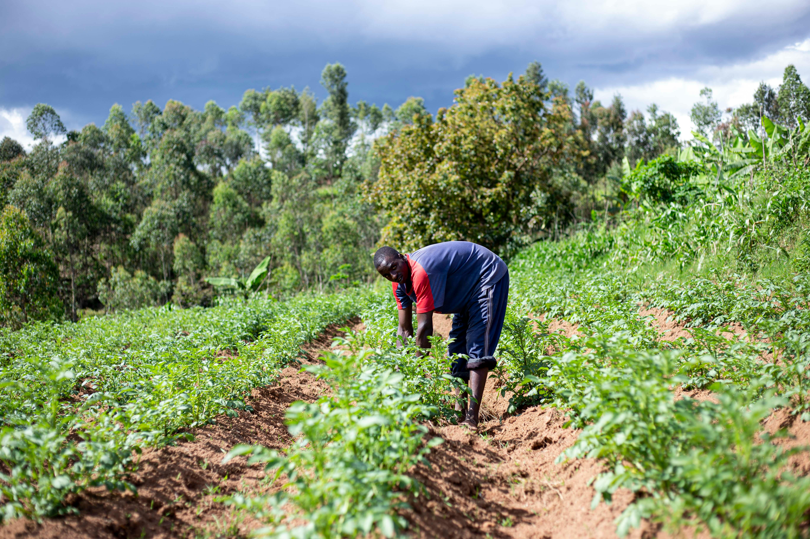

Mission
La mission d’EMERGENCE RDC est de réhabiliter et d’améliorer qualitativement l’état des ressources naturelles, en particulier celui des zones humides, pour le bien être de populations locales et autochtones à travers des actions financièrement durables, écologiquement et culturellement responsables.

Experience Dans le Domaine
Plantation de 75501 arbres fruitiers et agroforestiers autour des écoles et des communautés
environnantes dans les territoires de Mwenga (Secteur d’Itombwe) et de Fizi (Itota, Kilicha,
Kazimia, Fizi centre, Namisha…) dès de 2011 jusqu’à ce jour.
Formation, implémentation de 25 brigades scolaires de l’environnement (2022).
Implémentation de 20 VSLA dans le cadre de la lutte contre la pauvreté (2021).
10300 membres des communautés locales ont été sensibilisés et pris conscience de l’intérêt de
la conservation et de la protection de l’environnement de 2021 à 2023.
55 séances de formations organisées avec les communautés locales sur la gestion
responsable de l’environnement de 2021 à 2022.
Création des espaces verts au niveau de 20 écoles (E.P. Mukindja, Lukongo, Fizi, Itota,
Luundo, Tupendane, Bandari, Lubondja/Namisha, Bijombo, Hodari, Ibindi,
Lwata/Kazimia…)
685 Personnes Abandonnées et Défavorisées (PAD) formés dans les divers domaines de formation pratique (professionnelle) dont 110 personnes vivant avec les VIH Sida, 123 personnes vivant avec handicap, 352 enfants de la rue et 82 enfanta sortis des forces et groupes armés ont été aussi formés en entrepreneuriat afin de leur permettre de créer eux-mêmes leurs propres entreprises.